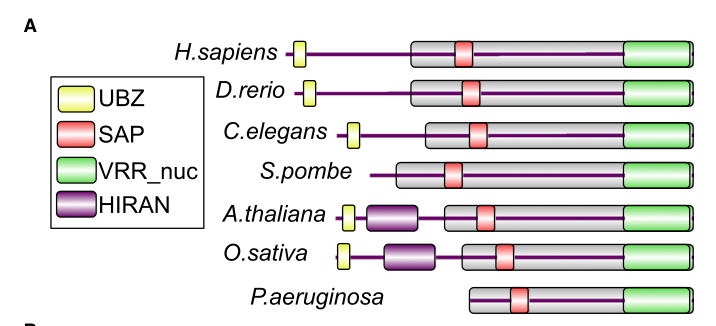

FAN-1 (Fanconi-associated nuclease 1 homolog) is a structure-specific nuclease required for DNA interstrand cross-link (ICL) repair in C. elegans. The protein contains an N-terminal UBZ4-type zinc finger that binds monoubiquitinated FANCD2, a winged-helix DNA-binding domain, a TPR scaffold domain, and a C-terminal VRR-NUC catalytic domain that provides both 5'-3' exonuclease and 5'-flap endonuclease activities. fan-1 mutant worms show no visible phenotype under normal conditions but exhibit strong embryonic lethality upon treatment with ICL-inducing agents (cisplatin, nitrogen mustard, mitomycin C). Recent work in C. elegans demonstrates that FAN-1 also mediates error-prone translesion synthesis during ICL repair, generating SNVs via POLH and REV1/3-mediated bypass, while suppressing deletion-prone POLQ/HELQ-mediated end joining (TMEJ) - i.e. FAN-1 acts as a determinant of ICL repair pathway choice in a pathway parallel to canonical Fanconi anemia factors. FAN-1 localizes to the nucleus and is dynamically recruited to the nucleoplasm after crosslinks in an UNC-84 (SUN-domain/LINC)-dependent manner; in the germline its recruitment is coordinated with the FNCM-1/FCD-2 replication-stress relocalization program. FAN-1 interacts with SMO-1 (SUMO).
| GO Term | Evidence | Action | Reason |
|---|---|---|---|
|
GO:0005634
nucleus
|
IDA
PMID:20603016 Deficiency of FANCD2-associated nuclease KIAA1018/FAN1 sensi... |
ACCEPT |
Summary: GFP-tagged FAN-1 localizes to the nucleus in C. elegans, directly demonstrated
by Kratz et al. 2010. Well supported by the protein's function as a nuclear DNA
repair nuclease. Falcon deep research adds that FAN-1 is dynamically recruited to the
nucleoplasm after crosslinks in an UNC-84 (SUN-domain/LINC)-dependent manner (Lawrence 2016).
Supporting Evidence:
PMID:20603016
KIAA1018 is a 5'-->3' exonuclease and a structure-specific endonuclease...recruitment to DNA damage through interaction of its UBZ domain with monoubiquitylated FANCD2
PMID:27956467
nuclease FAN-1 to the nucleoplasm, suggesting that UNC-84 both alters the extent
file:worm/fan-1/fan-1-deep-research-falcon.md
FAN-1 is reported to be **not efficiently recruited to the nucleoplasm in the absence of UNC-84**
|
|
GO:0006281
DNA repair
|
IMP
PMID:20603015 Identification of KIAA1018/FAN1, a DNA repair nuclease recru... |
ACCEPT |
Summary: fan-1 mutant worms show strong increase in embryonic lethality following
treatment with ICL-inducing agents, demonstrating involvement in DNA repair. Accept but
note this is less specific than ICL repair. Falcon deep research adds C. elegans-specific
phenotypic evidence: after TMP/UVA crosslinking, fan-1 mutants have WT-like mitotic features
but a disorganized, non-functional germline resulting in sterility, and an increased incidence
of protruding vulva (Wilson 2017).
Reason: Experimentally supported by mutant phenotype. The more specific term ICL repair (GO:0036297) better captures the core function, but DNA repair is not incorrect.
Supporting Evidence:
PMID:20603015
Depletion of FAN1 from human cells causes hypersensitivity to ICLs, defects in ICL repair, and genome instability
PMID:28934497
fan-1 and slx-1 mutant animals had WT-like mitotic features, yet possessed no or a disorganized, non-functional germline (resulting in sterility)
file:worm/fan-1/fan-1-deep-research-falcon.md
**fan-1 mutants** were among strains showing high/modest sensitivity. Post-treatment imaging (3 days) found that fan-1 animals had WT-like mitotic features but **severely disrupted germlines** (no or disorganized, non-functional germline leading to **sterility**)
|
|
GO:0006281
DNA repair
|
IMP
PMID:20603016 Deficiency of FANCD2-associated nuclease KIAA1018/FAN1 sensi... |
ACCEPT |
Summary: Same biological conclusion as above, independently confirmed by Kratz et al. C. elegans fan-1 mutants are sensitized to ICL agents.
Reason: Independent experimental confirmation of DNA repair role
Supporting Evidence:
PMID:20603016
human cells depleted of KIAA1018 are sensitized to ICL-inducing agents and display chromosomal instability
|
|
GO:0005515
protein binding
|
IPI
PMID:14704431 A map of the interactome network of the metazoan C. elegans. |
KEEP AS NON CORE |
Summary: High-throughput Y2H interactome screen detected interaction between FAN-1 and SMO-1 (SUMO). The term protein binding is uninformative per curation guidelines. The interaction with SUMO suggests FAN-1 may be SUMOylated or interact with SUMOylated partners, but the biological significance is unclear from a HT screen alone.
Reason: Protein binding is too generic to be informative. The interaction with SMO-1 was detected in a HT interactome screen without validation of biological relevance.
Supporting Evidence:
PMID:14704431
more than 4000 interactions were identified from high-throughput, yeast two-hybrid (HT=Y2H) screens
|
|
GO:0005515
protein binding
|
IPI
PMID:19123269 Empirically controlled mapping of the Caenorhabditis elegans... |
KEEP AS NON CORE |
Summary: Independent Y2H screen also detected FAN-1/SMO-1 interaction, providing additional support. Still, protein binding is uninformative per curation guidelines.
Reason: Same rationale - protein binding is too generic. Duplicate detection of SMO-1 interaction is encouraging but does not make the GO term more informative.
Supporting Evidence:
PMID:19123269
We present an expanded C. elegans protein-protein interaction network
|
|
GO:0005634
nucleus
|
IBA
GO_REF:0000033 |
ACCEPT |
Summary: Phylogenetically inferred nuclear localization, consistent with IDA evidence from PMID:20603016 and the protein's function as a nuclear DNA repair enzyme.
Reason: Concordant with direct experimental IDA evidence
|
|
GO:0036297
interstrand cross-link repair
|
IBA
GO_REF:0000033 |
ACCEPT |
Summary: Phylogenetically inferred ICL repair role. This is the core biological function of FAN-1, well supported by experimental data from three independent 2010 papers and subsequent C. elegans-specific studies.
Reason: Core function, strongly supported by experimental evidence across species.
BioReason deep research confirms domain architecture consistent with ICL repair role.
Falcon deep research adds C. elegans-specific genetic and localization evidence (MacKay 2010, Wilson 2017,
Lawrence 2016, Kim 2018, Tijsterman 2024) reinforcing this as the core biological function.
Supporting Evidence:
file:worm/fan-1/fan-1-deep-research-bioreason-sft.md
A nuclear DNA cross-link repair nuclease...that is recruited to ubiquitin-marked damage sites, binds and positions duplex DNA, and uses a metal-dependent nuclease core to incise DNA near interstrand cross-links
file:worm/fan-1/fan-1-deep-research-falcon.md
The best-supported annotation is that **fan-1/P90740** encodes a **structure-specific DNA nuclease** acting mainly during **interstrand crosslink repair** and **replication-associated DNA damage processing**, likely via incision/unhooking of branched/5′-flap-like intermediates; it acts in FA-linked but partly parallel pathways, is recruited in the germline by **FNCM-1/FCD-2**, and is relocalized to the nucleoplasm by **UNC-84** after crosslinks.
PMID:28934497
fan-1 or slx-1 resulted in germline-restricted sensitivity, revealing context-dependent contributions of these two nucleases
|
|
GO:0008409
5'-3' exonuclease activity
|
IBA
GO_REF:0000033 |
ACCEPT |
Summary: Phylogenetically inferred 5'-3' exonuclease activity. Human FAN1 has been
directly shown to have this activity via the VRR-NUC domain. Crystal structures
confirm the 3-nucleotide interval cleavage mechanism. Falcon deep research notes that this
FAN1 nuclease activity extends beyond classical ICL unhooking: a PCNA- and RFC-dependent,
strand-directed mode removes triplet-repeat extrahelical extrusions (Phadte 2023); the PCNA/RFC
replisome machinery is conserved, suggesting analogous regulation of worm FAN-1.
Reason: Well-characterized enzymatic activity of the FAN1 family via VRR-NUC domain
Supporting Evidence:
PMID:37549289
we describe a strand-directed, extrusion-provoked nuclease function of FAN1 that
|
|
GO:0017108
5'-flap endonuclease activity
|
IBA
GO_REF:0000033 |
ACCEPT |
Summary: Phylogenetically inferred 5'-flap endonuclease activity. All three discovery
papers demonstrated this activity for human FAN1, and it is a hallmark of the
FAN1 family. The VRR-NUC domain and associated structures are conserved in C. elegans.
Falcon deep research adds biochemical detail: recombinant FAN1 has strong endonuclease activity
on 5' flap substrates and weaker activity on replication-fork-like DNA, cleaving the flap-containing
strand in the duplex region near the branchpoint (~4 nt), with WT cleavage rates >0.2 s-1 versus
0.0003 s-1 for a catalytic mutant (MacKay 2010).
Reason: Core enzymatic activity of FAN1, conserved across the family
Supporting Evidence:
file:worm/fan-1/fan-1-deep-research-falcon.md
cleavage occurs on the flap-containing strand, in the duplex region near the branchpoint (about **4 nt from the branchpoint**)
|
|
GO:0070336
flap-structured DNA binding
|
IBA
GO_REF:0000033 |
ACCEPT |
Summary: Phylogenetically inferred flap-structured DNA binding. Consistent with the winged-helix DNA-binding domain and the demonstrated substrate specificity of FAN1 for 5' flap structures.
Reason: Required for FAN1's nuclease activity on flap substrates
|
|
GO:0003676
nucleic acid binding
|
IEA
GO_REF:0000002 |
KEEP AS NON CORE |
Summary: InterPro-based electronic annotation from tRNA endonuclease-like domain superfamily. Correct but very general - more specific DNA binding and flap-structured DNA binding terms are already annotated.
Reason: Correct but subsumed by more specific terms (GO:0003677, GO:0070336)
|
|
GO:0003677
DNA binding
|
IEA
GO_REF:0000002 |
KEEP AS NON CORE |
Summary: InterPro-based annotation from UBZ4 zinc finger domain (IPR006642). FAN-1 does bind DNA, though via the winged-helix domain rather than the UBZ4 domain (which binds ubiquitin). The annotation is correct in substance even if the InterPro rationale is indirect.
Reason: Correct that FAN-1 binds DNA, but subsumed by more specific GO:0070336 (flap-structured DNA binding)
|
|
GO:0004518
nuclease activity
|
IEA
GO_REF:0000002 |
KEEP AS NON CORE |
Summary: InterPro-based annotation from FAN1-like family (IPR033315). Correct but very general - more specific terms (5'-3' exonuclease, 5'-flap endonuclease) are already annotated.
Reason: Correct but subsumed by more specific terms GO:0008409 and GO:0017108
|
|
GO:0004528
phosphodiesterase I activity
|
IEA
GO_REF:0000003 |
KEEP AS NON CORE |
Summary: EC-based annotation from EC 3.1.4.1. This is a broad enzyme classification for phosphodiesterase activity. FAN1's nuclease activity is better described by the more specific exonuclease and endonuclease terms.
Reason: Technically correct per EC classification but uninformative compared to more specific nuclease terms
|
|
GO:0005634
nucleus
|
IEA
GO_REF:0000044 |
ACCEPT |
Summary: UniProt subcellular location-based annotation. Consistent with IDA evidence.
Reason: Concordant with IDA experimental data from PMID:20603016
|
|
GO:0006281
DNA repair
|
IEA
GO_REF:0000002 |
ACCEPT |
Summary: InterPro-based annotation from UBZ4 zinc finger domain (IPR006642). Correct and consistent with experimental IMP evidence.
Reason: Concordant with IMP experimental data
|
|
GO:0016788
hydrolase activity, acting on ester bonds
|
IEA
GO_REF:0000002 |
KEEP AS NON CORE |
Summary: InterPro-based annotation from VRR-NUC domain (IPR014883). Correct but extremely general - the nuclease and exonuclease terms are far more informative.
Reason: Correct but too general, subsumed by specific nuclease activity terms
|
|
GO:0036297
interstrand cross-link repair
|
IEA
GO_REF:0000002 |
ACCEPT |
Summary: InterPro-based annotation from FAN1-like family (IPR033315). Consistent with experimental evidence and IBA annotation.
Reason: Core function, consistent with multiple lines of evidence
|
Q: Does FAN-1 function independently of FCD-2/FANCD2 in all ICL repair contexts in C. elegans, or only in specific tissues or developmental stages?
Suggested experts: Tijsterman M, Schumacher B
Q: What is the biological significance of the FAN-1/SMO-1 (SUMO) interaction detected in Y2H screens? Is FAN-1 SUMOylated, and does this regulate its recruitment or activity?
Suggested experts: Gartner A, Hengartner MO
Q: Does FAN-1 homodimerize in C. elegans as human FAN1 does, and is dimerization required for efficient ICL repair in vivo?
Suggested experts: Xiong Y, Sung P
Experiment: Generate fcd-2 mutant worms carrying a GFP-tagged fan-1 transgene. Test whether FAN-1::GFP forms nuclear foci after ICL induction (e.g., MMC treatment) in fcd-2 mutant versus wild-type backgrounds.
Hypothesis: FAN-1 recruitment to ICL sites in C. elegans depends on FCD-2 monoubiquitination
Type: fluorescence microscopy
Experiment: Create catalytic-dead fan-1 alleles (e.g., mutations in the VRR-NUC active site metal-coordinating residues D810, E825, D826) by CRISPR and test ICL sensitivity compared to null alleles.
Hypothesis: FAN-1 nuclease activity, not just its presence, is required for ICL repair in C. elegans
Type: genetic complementation
I begin with the InterPro architecture. An N-terminal IPR006642 Rad18, zinc finger UBZ4-type domain occupies residues 35–62. UBZ4 zinc fingers recognize ubiquitin adducts on proteins or DNA, which equips the protein to dock onto monoubiquitinated chromatin factors at sites of DNA damage. The core of the protein is defined by two family-level signatures—IPR033315 Fanconi-associated nuclease 1-like (residues 115–860) and IPR049132 Fanconi-associated nuclease 1-like, eukaryotes (residues 214–856)—which together specify a eukaryotic FAN1-type nuclease scaffold. Within this scaffold, a discrete IPR049125 winged-helix domain (residues 245–305) provides a DNA-binding module that can grip duplex DNA and position the scissile strand. A central IPR049126 TPR domain (residues 457–609) forms a solenoid of tetratricopeptide repeats that mediates protein–protein interactions, enabling assembly with repair factors. The C-terminus contains the catalytic core: IPR014883 VRR-NUC domain (residues 742–858, also annotated as 743–857) is a metal-dependent nuclease fold characteristic of FAN1/VRR-NUC enzymes, and it overlaps with IPR011856 tRNA endonuclease-like domain superfamily (residues 794–865), indicating an RNase H/EndA-like endonuclease topology adapted here for DNA phosphodiester hydrolysis. The ordered layout—ubiquitin-binding UBZ4 at the N-terminus, DNA-binding winged helix, scaffolding TPR, and a C-terminal VRR-NUC nuclease—creates a recruitment-and-cleavage machine specialized for DNA repair.
This architecture causes specific molecular functions. The VRR-NUC/tRNA endonuclease-like core confers endonuclease activity on DNA, while the winged-helix domain positions duplex DNA for incision. The UBZ4 zinc finger binds ubiquitin, targeting the enzyme to ubiquitinated chromatin, and the TPR array mediates protein binding to assemble a repair complex. These features together support protein binding (GO:0005515) as a general capability and strongly imply DNA binding and endonuclease activity as direct molecular functions executed by the catalytic core.
From these molecular activities, the biological process follows. A ubiquitin-guided, DNA-bound nuclease that assembles via TPR modules is suited to DNA repair (GO:0006281), specifically the processing of DNA interstrand cross-links. The UBZ4 domain would capture monoubiquitinated FANCD2 at stalled replication forks; the winged-helix and VRR-NUC core then incise the DNA to unhook the cross-link. The family-level FAN1-like signatures indicate the incision occurs near the cross-link and extends to create entry points for downstream nucleases and translesion synthesis, a hallmark of the Fanconi pathway.
The cellular component is dictated by the need to access chromosomal DNA and assemble with nuclear repair factors. The presence of DNA-binding and ubiquitin-targeting modules that act on chromatin implies a nuclear residence, consistent with the nucleus (GO:0005634).
This mechanistic model predicts specific interaction partners and roles. The UBZ4 domain should bind monoubiquitinated FANCD2, recruiting the nuclease to the Fanconi focus. The TPR region likely scaffolds additional Fanconi and cross-link repair components: FANCI (via its HD2-associated region), ERCC4-family nucleases (XPF homologs) that extend incisions after the initial FAN1-mediated cut, and SLX1 as an alternative structure-specific endonuclease. Coordination with the ERCC (XPF) homolog and ERCC4-domain proteins would enable dual incisions flanking the cross-link. PMS family members (Fanconi-associated helicase-like factors) could couple incision to DNA unwinding, while the Werner syndrome helicase (WRN) may expand the repair at stalled forks. DNA polymerase kappa, a translesion polymerase, would fill gaps after unhooking. A DNA mis-repair domain-containing factor likely functions as an adaptor or quality-control component that senses aberrant intermediates and stabilizes the repair assembly. Altogether, ubiquitin-guided recruitment, DNA binding, and a VRR-NUC catalytic core drive targeted endonucleolytic incisions that initiate cross-link repair within the nuclear compartment.
## Functional Summary
A nuclear DNA cross-link repair nuclease in Caenorhabditis elegans that is recruited to ubiquitin-marked damage sites, binds and positions duplex DNA, and uses a metal-dependent nuclease core to incise DNA near interstrand cross-links. Through a TPR-based scaffold, it assembles with Fanconi and excision-repair factors to unhook the cross-link and hand off intermediates for unwinding and gap filling, thereby restoring genome integrity during replication stress.
## UniProt Summary
Nuclease required for the repair of DNA interstrand cross-links (ICL) in response to DNA damage.
## InterPro Domains
- IPR006642: Rad18, zinc finger UBZ4-type (domain) [35-62]
- IPR033315: Fanconi-associated nuclease 1-like (family) [115-860]
- IPR049132: Fanconi-associated nuclease 1-like, eukaryotes (family) [214-856]
- IPR049125: Fanconi-associated nuclease 1-like, winged-helix domain (domain) [245-305]
- IPR049126: Fanconi-associated nuclease 1-like, TPR domain (domain) [457-609]
- IPR014883: VRR-NUC domain (domain) [742-858]
- IPR014883: VRR-NUC domain (domain) [743-857]
- IPR011856: tRNA endonuclease-like domain superfamily (homologous_superfamily) [794-865]
## GO Term Predictions
### Molecular Function
### Biological Process
### Cellular Component
The research report should be a detailed narrative explaining the function, biological processes, and localization of the gene product. Citations should be given for all claims.
You should prioritize authoritative reviews and primary scientific literature when conducting research. You can supplement
this with annotations you find in gene/protein databases, but these can be outdated or inaccurate.
We are specifically interested in the primary function of the gene - for enzymes, what reaction is catalyzed, and what is the substrate specificity? For transporters, what is the substrate? For structural proteins or adapters, what is the broader structural role? For signaling molecules, what is the role in the pathway.
We are interested in where in or outside the cell the gene product carries out its function.
We are also interested in the signaling or biochemical pathways in which the gene functions. We are less interested in broad pleiotropic effects, except where these elucidate the precise role.
Include evidence where possible. We are interested in both experimental evidence as well as inference from structure, evolution, or bioinformatic analysis. Precise studies should be prioritized over high-throughput, where available.
The C. elegans gene fan-1 targeted here is correctly matched to UniProt P90740 and ORF C01G5.8. In the discovery paper that defined the FAN1 family, a C. elegans ortholog is explicitly listed as P90740 in a cross-species FAN1 domain-architecture schematic, and the worm locus is described as C01G5.8 (Ce-fan-1) in functional experiments (MacKay et al., 2010; publication date 2010-07-09; https://doi.org/10.1016/j.cell.2010.06.021). (mackay2010identificationofkiaa1018fan1 pages 1-2, mackay2010identificationofkiaa1018fan1 pages 7-8, mackay2010identificationofkiaa1018fan1 media 02b05740)
Disambiguation note. “FAN1” is widely used in mammals for “Fanconi anemia-associated nuclease 1”; here, multiple independent worm studies explicitly connect C. elegans fan-1 to interstrand crosslink repair, consistent with the UniProt description and FAN1-family domain composition, reducing the risk of symbol confusion. (mackay2010identificationofkiaa1018fan1 pages 7-8, tijsterman2024fan1mediatedtranslesionsynthesis pages 6-6, lawrence2016linccomplexespromote pages 14-15)
DNA interstrand crosslinks (ICLs) are covalent lesions that physically link the two DNA strands, blocking strand separation required for replication and transcription. FAN1-family nucleases are conserved factors implicated in resolving ICL-associated intermediates, especially in replication-coupled contexts, where branched DNA structures (forks/flaps) arise. (mackay2010identificationofkiaa1018fan1 pages 1-2, mackay2010identificationofkiaa1018fan1 pages 2-3)
FAN1 (Fanconi anemia-associated nuclease 1) is a conserved, multi-domain, structure-specific nuclease. In the original characterization, human FAN1/KIAA1018 is described as containing:
- an N-terminal UBZ-type ubiquitin-binding domain (implicated in binding ubiquitin signals),
- a SAP-type DNA-binding domain,
- and a VRR_nuc (DUF994) nuclease domain containing a PD-(D/E)XK catalytic motif typical of many nucleases. (mackay2010identificationofkiaa1018fan1 pages 2-3)
A key family-level inference for worm fan-1 is supported by the domain-architecture schematic that includes C. elegans P90740 and shows conserved modularity across orthologs. (mackay2010identificationofkiaa1018fan1 media 02b05740)
At the biochemical level, FAN1 is best described as a DNA phosphodiesterase that performs structure-selective incision (endonuclease activity) and can also show exonuclease activity in some contexts.
In the defining biochemical assays, recombinant FAN1 showed structure-specific endonuclease activity with strong preference for 5′ flap DNA and weaker activity on replication-fork-like substrates; cleavage occurs on the flap-containing strand, in the duplex region near the branchpoint (about 4 nt from the branchpoint). (mackay2010identificationofkiaa1018fan1 pages 3-3)
Quantitatively, the MacKay et al. assays reported observed cleavage rates of >0.2 s⁻¹ for wild-type FAN1 versus 0.0003 s⁻¹ for a catalytic mutant (DR), supporting that the VRR_nuc catalytic center is essential. (mackay2010identificationofkiaa1018fan1 pages 3-3)
A 2023 synthesis of FAN1-family nuclease specificity emphasizes that FAN1 can process a broad range of branched/repair substrates (e.g., flaps, forks, bubbles/D-loops, nicks/gaps, and ICL-containing substrates) and that activity can depend on features like 5′-terminal phosphate and flap length. (ouanounou2023kineticandbiophysical pages 42-47, ouanounou2023kineticandbiophysical pages 47-54)
Worm genetics provide direct evidence that Ce-fan-1 (C01G5.8; P90740) protects against DNA crosslinking damage. A deletion of the Ce-fan-1 locus produced no overt developmental defects under unchallenged conditions, but conferred hypersensitivity to nitrogen mustard (HN2) and cisplatin; L1 exposure impaired progression through larval stages, and RNAi depletion reproduced sensitivity. (mackay2010identificationofkiaa1018fan1 pages 7-8)
In the same study, Ce-fan-1 mutants were described as even more sensitive to these ICL agents than worms lacking the fcd-2 (FANCD2 ortholog), consistent with an important role in ICL tolerance. (mackay2010identificationofkiaa1018fan1 pages 7-8)
In a systematic analysis of ICL repair pathways using TMP/UVA (crosslinking treatment), fan-1 mutants were among strains showing high/modest sensitivity. Post-treatment imaging (3 days) found that fan-1 animals had WT-like mitotic features but severely disrupted germlines (no or disorganized, non-functional germline leading to sterility) and increased incidence of protruding vulva phenotypes; the germline phenotype was described as slightly worse than slx-1. (wilson2017systematicanalysisof pages 5-6)
These observations localize fan-1’s protective role prominently to the germline under ICL stress, consistent with the idea that ICL repair is critical for proliferative germ cells. (wilson2017systematicanalysisof pages 5-6)
In a mechanistic model linking nuclear-envelope components to repair pathway choice, FAN-1 is described as having a specific requirement in crosslink repair and is biochemically capable of unhooking interstrand crosslinks and strand incision. FAN-1 is linked to the Fanconi network through interaction with FANCD2, but is explicitly described as not a “classic FA gene.” (lawrence2016linccomplexespromote pages 14-15)
Recent worm work on defined psoralen ICL repair outcomes argues that FAN1 can act in a pathway parallel to canonical Fanconi anemia factors, and that its processing may generate substrates for translesion synthesis (TLS) polymerases. (tijsterman2024fan1mediatedtranslesionsynthesis pages 6-6)
Multiple worm studies place FAN-1 in the nucleus/germline and reveal inducible relocalization:
UNC-84-dependent recruitment to the nucleoplasm after crosslinks. FAN-1 is reported to be not efficiently recruited to the nucleoplasm in the absence of UNC-84, while general nuclear localization does not require a fully functional LINC complex—suggesting UNC-84 tethers FAN-1. This connects FAN-1 recruitment to nuclear-envelope biology during crosslink repair. (Lawrence et al., 2016; publication date 2016-12-12; https://doi.org/10.1083/jcb.201604112). (lawrence2016linccomplexespromote pages 14-15)
FA-pathway ordering in the germline (FNCM-1 → FCD-2 → FAN-1). In C. elegans, FNCM-1 is explicitly stated to be required to recruit FCD-2 and the downstream nuclease FAN-1 to the germline, and FAN-1 is included among components that show dynamic localization upon hydroxyurea (HU)-induced replication-fork arrest. (Kim et al., 2018; publication date 2018-03-01; https://doi.org/10.1534/genetics.118.300823). (kim2018fanconianemiafancmfncm1 pages 12-14, kim2018fanconianemiafancmfncm1 pages 10-12)
Quantitative localization context. While the available excerpt does not report FAN-1-specific Pearson coefficients, it provides quantitative evidence that the broader FA-associated stress compartment is measurable (e.g., SPR-5/FNCM-1 colocalization extension in pachytene under HU with P = 0.0079, n = 4–6 gonads), supporting a regulated relocalization program in which FAN-1 participates. (kim2018fanconianemiafancmfncm1 pages 10-12)
A major 2023 advance is the demonstration that FAN1 has a PCNA- and RFC-dependent, strand-directed nuclease activity that can remove triplet-repeat extrahelical extrusions (e.g., CAG/CTG, CGG) under near-physiological ionic conditions. This work emphasizes that FAN1 function extends beyond “classical” ICL unhooking and can act on alternative DNA structures that arise during replication/repair, and that PCNA can restore FAN1 activity under higher-salt conditions. (Phadte et al., 2023-08; https://doi.org/10.1073/pnas.2302103120). (phadte2023fan1removestriplet pages 1-2, phadte2023fan1removestriplet pages 3-5)
Selected quantitative examples from the 2023 study:
- FAN1 activity decreased >3-fold when KCl was raised from 70 mM to 115 mM, and PCNA restored activity at higher salt. (phadte2023fan1removestriplet pages 3-5)
- FAN1 cleavage produced a ~10-nt product with a cut ~14 nt from an extrusion in a defined assay context. (phadte2023fan1removestriplet pages 3-5)
Relevance to C. elegans. While this is human biochemical evidence, the machinery (PCNA clamp; RFC loader) is conserved, and worm FAN-1’s nuclease core and repair roles suggest that analogous PCNA-coupled activation could be a plausible mechanism for regulating FAN-1 access or strand bias at branched/extrahelical structures in vivo. (phadte2023fan1removestriplet pages 1-2, ouanounou2023kineticandbiophysical pages 42-47)
A 2023 synthesis highlights that FAN1 recruitment via UBZ binding to monoubiquitinated ID2 (FANCD2/FANCI) is an important route, but also summarizes evidence that FAN1 can function independently of UBZ-mediated recruitment in some mammalian contexts (UBZ mutants rescuing ICL repair in certain systems). This is particularly relevant in worms because ICL repair architecture differs across species and may rely on partially FA-independent modules. (ouanounou2023kineticandbiophysical pages 39-42, ouanounou2023kineticandbiophysical pages 42-47)
A 2024 preprint using C. elegans with defined psoralen ICL substrates reports that fan-1 is required for TLS-associated outcomes (with mutation-spectrum profiles resembling TLS polymerase mutants such as polh-1, rev-1, rev-3) and additionally suggests FAN1 suppresses deletion-prone end joining routes involving POLQ/HELQ. (Tijsterman et al., 2024-02; https://doi.org/10.21203/rs.3.rs-3898201/v1). (tijsterman2024fan1mediatedtranslesionsynthesis pages 6-6, tijsterman2024fan1mediatedtranslesionsynthesis pages 8-8)
This work positions worm FAN-1 as not only an “ICL repair nuclease,” but also a determinant of repair pathway choice (promoting TLS-compatible processing and limiting TMEJ-like deletions) in a lesion-defined system. (tijsterman2024fan1mediatedtranslesionsynthesis pages 8-8)
Although C. elegans fan-1 itself is a basic research target, the system is used as an in vivo platform to dissect DNA crosslink repair logic and mutational outcomes of genotoxic exposures. In practice, fan-1 mutants are leveraged as sensitized backgrounds to:
- map ICL repair pathways using agents such as TMP/UVA, nitrogen mustards, and cisplatin, and
- analyze how pathway perturbations reshape mutational signatures and germline viability/sterility outcomes. (wilson2017systematicanalysisof pages 5-6, mackay2010identificationofkiaa1018fan1 pages 7-8)
Cross-species, FAN1 biochemistry is being developed for applications relevant to human disease (e.g., repeat instability) via PCNA/RFC-controlled strand-directed nuclease action; these concepts inform how conserved nucleases like worm FAN-1 might be regulated by replisome components. (phadte2023fan1removestriplet pages 1-2)
The strongest supported primary annotation for worm fan-1 is:
fan-1 encodes a conserved, structure-specific DNA nuclease that protects the germline and organismal development from ICL-induced genotoxic stress, likely by incising branched DNA intermediates (5′-flap/fork-like structures) generated during replication-coupled ICL repair and by shaping downstream repair pathway choice (TLS vs deletion-prone end joining). (mackay2010identificationofkiaa1018fan1 pages 7-8, wilson2017systematicanalysisof pages 5-6, tijsterman2024fan1mediatedtranslesionsynthesis pages 6-6, mackay2010identificationofkiaa1018fan1 pages 3-3)
Evidence indicates FAN-1 action is nuclear and dynamically recruited:
- FAN-1 recruitment to the nucleoplasm after crosslinks depends on UNC-84 (nuclear-envelope tethering). (lawrence2016linccomplexespromote pages 14-15)
- FAN-1 is recruited to the germline downstream of FNCM-1 and FCD-2 and participates in replication-stress relocalization programs under HU. (kim2018fanconianemiafancmfncm1 pages 12-14, kim2018fanconianemiafancmfncm1 pages 10-12)
Together, these argue that worm FAN-1 is deployed in nuclei—particularly germline nuclei—where DNA replication and repair intermediates accumulate. (wilson2017systematicanalysisof pages 5-6, kim2018fanconianemiafancmfncm1 pages 12-14)
Direct enzymology for the C. elegans protein is limited in the retrieved texts, but family-level evidence strongly supports the following substrate preferences:
- high activity on 5′ flap structures and incision near branchpoints, and
- action on branched/replication-fork-like DNA substrates relevant to stalled forks at ICLs. (mackay2010identificationofkiaa1018fan1 pages 3-3, ouanounou2023kineticandbiophysical pages 42-47)
Given that the worm ortholog is included in the conserved domain architecture (UBZ/SAP/VRR_nuc) and is experimentally required for ICL tolerance, the most parsimonious interpretation is that worm FAN-1 catalyzes structure-specific cleavage of branched DNA during ICL processing, enabling productive TLS/repair. (mackay2010identificationofkiaa1018fan1 media 02b05740, mackay2010identificationofkiaa1018fan1 pages 7-8, tijsterman2024fan1mediatedtranslesionsynthesis pages 6-6)
The table below consolidates key claims, evidence types, quantitative data, and source URLs.
| Claim/Function | Evidence type | Key details/quantitative data | Source (authors, year) | DOI URL |
|---|---|---|---|---|
| Identity/orthology: C. elegans fan-1 = C01G5.8 / UniProt P90740, a FAN1-family nuclease | Primary biochemistry/orthology; worm-relevant family mapping | MacKay et al. explicitly include C. elegans P90740 in the FAN1 ortholog schematic and identify FAN1 proteins as conserved DNA-repair nucleases; domain schematic shows UBZ, SAP, and VRR_nuc domains across orthologs, supporting assignment of worm fan-1/C01G5.8 to the FAN1 family (mackay2010identificationofkiaa1018fan1 pages 1-2, mackay2010identificationofkiaa1018fan1 media 02b05740) | MacKay et al., 2010 | https://doi.org/10.1016/j.cell.2010.06.021 |
| Catalytic core and domain logic of FAN1 family | Primary biochemistry; review | Human FAN1 contains UBZ-type ubiquitin-binding, SAP-type DNA-binding, and VRR_nuc/DUF994 nuclease domains; VRR_nuc bears a PD-(D/E)XK nuclease motif. A 2023 synthesis further describes a bi-lobed architecture with N-terminal helical/SAP region and C-terminal TPR + VRR nuclease region, supporting inference that worm FAN-1 is a structure-specific phosphodiesterase acting on branched DNA (mackay2010identificationofkiaa1018fan1 pages 2-3, ouanounou2023kineticandbiophysical pages 47-54, ouanounou2023kineticandbiophysical pages 54-58) | MacKay et al., 2010; Ouanounou, 2023 | https://doi.org/10.1016/j.cell.2010.06.021 |
| Primary biochemical function: structure-specific nuclease with 5′-flap preference | Primary biochemistry | Recombinant FAN1 shows strong endonuclease activity on 5′ flap substrates and weaker activity on replication-fork-like DNA; cleavage occurs on the flap-containing strand ~4 nt from the branchpoint. Reported observed cleavage rates were >0.2 s⁻¹ for WT FAN1 versus 0.0003 s⁻¹ for the catalytic DR mutant, supporting a direct catalytic role of the conserved nuclease domain (mackay2010identificationofkiaa1018fan1 pages 3-3, mackay2010identificationofkiaa1018fan1 pages 1-2) | MacKay et al., 2010 | https://doi.org/10.1016/j.cell.2010.06.021 |
| Broader substrate specificity of FAN1 family relevant to worm annotation | Review/biochemical synthesis | FAN1 processes branched and lesion-containing DNA including 5′ flaps, replication forks, dsDNA, bubbles/D-loops, nicks, gaps, and ICL substrates; activity is favored on branched/double-flap structures and influenced by 5′-terminal phosphate, flap length, and metal ions. These family-level properties are the strongest biochemical basis for inferring worm substrate scope where direct worm enzymology is limited (ouanounou2023kineticandbiophysical pages 42-47, ouanounou2023kineticandbiophysical pages 47-54, ouanounou2023kineticandbiophysical pages 54-58) | Ouanounou, 2023 | N/A in retrieved context |
| Ce-fan-1 protects worms from DNA interstrand crosslink (ICL) damage | Worm genetics | In C. elegans, deletion/RNAi of Ce-fan-1 (C01G5.8) confers hypersensitivity to nitrogen mustard (HN2) and cisplatin; L1 larvae show impaired progression after ICL exposure, while mutants have no overt developmental defects without challenge. MacKay et al. note Ce-fan-1 mutants can be more sensitive than fcd-2/FANCD2-ortholog mutants under ICL stress (mackay2010identificationofkiaa1018fan1 pages 7-8) | MacKay et al., 2010 | https://doi.org/10.1016/j.cell.2010.06.021 |
| ICL sensitivity is accompanied by developmental and germline defects after TMP/UVA in worms | Worm genetics/phenotyping | After TMP/UVA crosslinking treatment, fan-1 mutants show WT-like mitotic features but no or a disorganized, non-functional germline, leading to sterility; phenotype was described as slightly worse than slx-1 mutants. fan-1 animals also show increased propensity for protruding vulva after treatment (wilson2017systematicanalysisof pages 5-6) | Wilson et al., 2017 | https://doi.org/10.1093/nar/gkx660 |
| FAN-1 is recruited to the nucleoplasm after crosslinks in an UNC-84-dependent manner | Worm localization/genetics | FAN-1 is not efficiently recruited to the nucleoplasm in the absence of UNC-84; however, FAN-1 nuclear localization does not require an intact LINC complex generally, suggesting UNC-84 acts as a tether. In zyg-12 mutants, FAN-1::GFP localization was reported as similar to WT, consistent with UNC-84 being the critical factor for recruitment (lawrence2016linccomplexespromote pages 13-14, lawrence2016linccomplexespromote pages 14-15) | Lawrence et al., 2016 | https://doi.org/10.1083/jcb.201604112 |
| Pathway placement: FAN-1 acts with FA-linked components but is not a classic FA core gene | Worm genetics/localization; review | FAN-1 is linked to the Fanconi pathway via FANCD2 interactions and ICL repair, but multiple sources note it is not a classic FA gene. In worms, UNC-84/LINC biology suggests FAN-1 function must be coordinated with NHEJ inhibition and HR promotion to avoid unproductive repair at crosslinks (lawrence2016linccomplexespromote pages 14-15, ouanounou2023kineticandbiophysical pages 39-42) | Lawrence et al., 2016; Ouanounou, 2023 | https://doi.org/10.1083/jcb.201604112 |
| FNCM-1 recruits FCD-2 and downstream FAN-1 to the germline | Worm localization/genetics | Kim et al. state explicitly that C. elegans FNCM-1 is required for recruiting FCD-2 and its downstream nuclease FAN-1 in the germline; the putative helicase/translocase domain of FNCM-1 is required for this recruitment. FAN-1 also participates in the dynamic localization pattern of FA-pathway factors after HU-induced replication-fork arrest (kim2018fanconianemiafancmfncm1 pages 12-14, kim2018fanconianemiafancmfncm1 pages 10-12) | Kim et al., 2018 | https://doi.org/10.1534/genetics.118.300823 |
| Replication-stress relocalization context for FAN-1 | Worm localization | Under HU-induced replication stress, FAN-1 is reported among proteins showing a dynamic localization pattern with FNCM-1, FCD-2, and SPR-5. Quantitative localization values in the excerpt were reported for related markers rather than FAN-1 directly; for example, SPR-5/FNCM-1 colocalization in pachytene increased with P = 0.0079 (n = 4–6 gonads), supporting a replication-stress-responsive FA-associated compartment in which FAN-1 participates (kim2018fanconianemiafancmfncm1 pages 10-12) | Kim et al., 2018 | https://doi.org/10.1534/genetics.118.300823 |
| Human-cell repair kinetics reinforce FAN1’s ICL-repair role relevant to worm annotation | Primary cell biology/biochemistry | In human cells depleted of FAN1, after cisplatin there was almost no decrease in the fraction of γ-H2AX-positive cells over time; controls had ~80% of cells with 2–40 γ-H2AX foci at 24 h, whereas by 96 h >50% of FAN1-depleted cells remained γ-H2AX-positive, indicating defective processing/resolution of ICL-associated damage. This supports the same core repair function inferred for worm FAN-1 (mackay2010identificationofkiaa1018fan1 pages 7-8) | MacKay et al., 2010 | https://doi.org/10.1016/j.cell.2010.06.021 |
| 2023 development: PCNA/RFC-dependent activation on repeat-extrusion substrates | Recent primary biochemistry | FAN1 has a newly emphasized activity on triplet-repeat extrusions; RFC + PCNA + ATP activate a strand-directed FAN1 reaction near extrahelical repeats. FAN1 cleaves near the extrusion and can remove both short and long repeat extrusions, extending FAN1 function beyond classical ICL repair and suggesting possible conserved crosstalk with replication factors in other organisms, including worms (phadte2023fan1removestriplet pages 1-2) | Phadte et al., 2023 | https://doi.org/10.1073/pnas.2302103120 |
| Quantitative 2023 mechanistic details for PCNA-dependent FAN1 activation | Recent primary biochemistry | On small repeat extrusions, FAN1 generated a hydrolytic product of ~10 nt with the cut located ~14 nt from the extrusion. FAN1 activity dropped by >3-fold when KCl increased from 70 mM to 115 mM, but PCNA restored activity under higher salt. In some assays RFC was not further stimulatory, whereas PCNA-dependent complex formation required the correct strand orientation, refining how PCNA controls FAN1 substrate engagement (phadte2023fan1removestriplet pages 3-5) | Phadte et al., 2023 | https://doi.org/10.1073/pnas.2302103120 |
| 2023 development: FA-dependent and FA-independent recruitment modes | Recent review/synthesis | Ouanounou summarizes evidence that FAN1 recruitment via UBZ binding to monoubiquitinated ID2 (FANCD2/FANCI) is important, but UBZ-mutant FAN1 can still rescue ICL repair in some mammalian systems. This is relevant for C. elegans because worms lack parts of the canonical FA core machinery, so FAN-1 may retain function through partially FA-independent recruitment/activation routes (ouanounou2023kineticandbiophysical pages 39-42, ouanounou2023kineticandbiophysical pages 42-47) | Ouanounou, 2023 | N/A in retrieved context |
| 2024 worm-specific mechanistic advance: FAN-1 promotes TLS at psoralen ICLs | Recent worm genetics/mechanism | In a defined psoralen-ICL assay, fan-1 mutants showed an aberrant repair profile in which wild-type and SNV outcomes were largely absent, resembling polh-1, rev-1, rev-3 TLS polymerase mutants. Authors infer that FAN-1 promotes translesion synthesis (TLS), likely by incision/unhooking that creates substrates for TLS polymerases (tijsterman2024fan1mediatedtranslesionsynthesis pages 6-6) | Tijsterman et al., 2024 (preprint) | https://doi.org/10.21203/rs.3.rs-3898201/v1 |
| 2024 worm-specific mechanistic advance: FAN-1 suppresses POLQ/HELQ-mediated end joining | Recent worm genetics/mechanism | The 2024 preprint proposes a dual role for FAN-1 in psoralen ICL repair: enabling TLS while suppressing POLQ/HELQ-mediated end joining (TMEJ). Loss of fan-1 increases TMEJ-type deletions after UV-TMP treatment, arguing that FAN-1 helps channel repair away from deletion-prone end joining and toward productive bypass (tijsterman2024fan1mediatedtranslesionsynthesis pages 8-8, tijsterman2024fan1mediatedtranslesionsynthesis pages 6-6) | Tijsterman et al., 2024 (preprint) | https://doi.org/10.21203/rs.3.rs-3898201/v1 |
| Expert-level annotation takeaway for C. elegans fan-1 | Integrated inference from worm genetics + family biochemistry | The best-supported annotation is that fan-1/P90740 encodes a structure-specific DNA nuclease acting mainly during interstrand crosslink repair and replication-associated DNA damage processing, likely via incision/unhooking of branched/5′-flap-like intermediates; it acts in FA-linked but partly parallel pathways, is recruited in the germline by FNCM-1/FCD-2, and is relocalized to the nucleoplasm by UNC-84 after crosslinks. Recent work extends likely function to pathway-choice control and potentially PCNA-coupled processing of non-B DNA intermediates (mackay2010identificationofkiaa1018fan1 pages 7-8, kim2018fanconianemiafancmfncm1 pages 12-14, lawrence2016linccomplexespromote pages 14-15, phadte2023fan1removestriplet pages 1-2, tijsterman2024fan1mediatedtranslesionsynthesis pages 6-6) | Integrated from MacKay et al., 2010; Lawrence et al., 2016; Kim et al., 2018; Phadte et al., 2023; Tijsterman et al., 2024 | https://doi.org/10.1016/j.cell.2010.06.021; https://doi.org/10.1083/jcb.201604112; https://doi.org/10.1534/genetics.118.300823; https://doi.org/10.1073/pnas.2302103120; https://doi.org/10.21203/rs.3.rs-3898201/v1 |
Table: This table summarizes the strongest evidence supporting functional annotation of C. elegans fan-1/P90740, integrating worm genetics, localization studies, core FAN1 biochemistry, and 2023-2024 mechanistic developments. It is useful as a compact evidence map linking claims about function, pathway placement, localization, and substrate specificity to specific sources and quantitative details.
A domain-architecture schematic from the defining FAN1 paper includes C. elegans P90740 and shows conserved FAN1 domains (UBZ, SAP, VRR_nuc; and HIRAN in the figure), supporting domain-based functional inference for worm fan-1. (mackay2010identificationofkiaa1018fan1 media 02b05740)
References
(mackay2010identificationofkiaa1018fan1 pages 1-2): Craig MacKay, Anne-Cécile Déclais, Cecilia Lundin, Ana Agostinho, Andrew J. Deans, Thomas J. MacArtney, Kay Hofmann, Anton Gartner, Stephen C. West, Thomas Helleday, David M.J. Lilley, and John Rouse. Identification of kiaa1018/fan1, a dna repair nuclease recruited to dna damage by monoubiquitinated fancd2. Cell, 142:65-76, Jul 2010. URL: https://doi.org/10.1016/j.cell.2010.06.021, doi:10.1016/j.cell.2010.06.021. This article has 397 citations and is from a highest quality peer-reviewed journal.
(mackay2010identificationofkiaa1018fan1 pages 7-8): Craig MacKay, Anne-Cécile Déclais, Cecilia Lundin, Ana Agostinho, Andrew J. Deans, Thomas J. MacArtney, Kay Hofmann, Anton Gartner, Stephen C. West, Thomas Helleday, David M.J. Lilley, and John Rouse. Identification of kiaa1018/fan1, a dna repair nuclease recruited to dna damage by monoubiquitinated fancd2. Cell, 142:65-76, Jul 2010. URL: https://doi.org/10.1016/j.cell.2010.06.021, doi:10.1016/j.cell.2010.06.021. This article has 397 citations and is from a highest quality peer-reviewed journal.
(mackay2010identificationofkiaa1018fan1 media 02b05740): Craig MacKay, Anne-Cécile Déclais, Cecilia Lundin, Ana Agostinho, Andrew J. Deans, Thomas J. MacArtney, Kay Hofmann, Anton Gartner, Stephen C. West, Thomas Helleday, David M.J. Lilley, and John Rouse. Identification of kiaa1018/fan1, a dna repair nuclease recruited to dna damage by monoubiquitinated fancd2. Cell, 142:65-76, Jul 2010. URL: https://doi.org/10.1016/j.cell.2010.06.021, doi:10.1016/j.cell.2010.06.021. This article has 397 citations and is from a highest quality peer-reviewed journal.
(tijsterman2024fan1mediatedtranslesionsynthesis pages 6-6): Marcel Tijsterman, Jip Verschuren, Robin van Schendel, Ivo van Bostelen, and Puck Knipscheer. Fan1-mediated translesion synthesis and polq/helq-mediated end joining generate interstrand crosslink-induced mutations. Unknown journal, Feb 2024. URL: https://doi.org/10.21203/rs.3.rs-3898201/v1, doi:10.21203/rs.3.rs-3898201/v1.
(lawrence2016linccomplexespromote pages 14-15): Katherine S. Lawrence, Erin C. Tapley, Victor E. Cruz, Qianyan Li, Kayla Aung, Kevin C. Hart, Thomas U. Schwartz, Daniel A. Starr, and JoAnne Engebrecht. Linc complexes promote homologous recombination in part through inhibition of nonhomologous end joining. The Journal of Cell Biology, 215:801-821, Dec 2016. URL: https://doi.org/10.1083/jcb.201604112, doi:10.1083/jcb.201604112. This article has 57 citations.
(mackay2010identificationofkiaa1018fan1 pages 2-3): Craig MacKay, Anne-Cécile Déclais, Cecilia Lundin, Ana Agostinho, Andrew J. Deans, Thomas J. MacArtney, Kay Hofmann, Anton Gartner, Stephen C. West, Thomas Helleday, David M.J. Lilley, and John Rouse. Identification of kiaa1018/fan1, a dna repair nuclease recruited to dna damage by monoubiquitinated fancd2. Cell, 142:65-76, Jul 2010. URL: https://doi.org/10.1016/j.cell.2010.06.021, doi:10.1016/j.cell.2010.06.021. This article has 397 citations and is from a highest quality peer-reviewed journal.
(mackay2010identificationofkiaa1018fan1 pages 3-3): Craig MacKay, Anne-Cécile Déclais, Cecilia Lundin, Ana Agostinho, Andrew J. Deans, Thomas J. MacArtney, Kay Hofmann, Anton Gartner, Stephen C. West, Thomas Helleday, David M.J. Lilley, and John Rouse. Identification of kiaa1018/fan1, a dna repair nuclease recruited to dna damage by monoubiquitinated fancd2. Cell, 142:65-76, Jul 2010. URL: https://doi.org/10.1016/j.cell.2010.06.021, doi:10.1016/j.cell.2010.06.021. This article has 397 citations and is from a highest quality peer-reviewed journal.
(ouanounou2023kineticandbiophysical pages 42-47): R Ouanounou. Kinetic and biophysical characterisation of 5'-flap nucleases in dna maintenance and repair. Unknown journal, 2023.
(ouanounou2023kineticandbiophysical pages 47-54): R Ouanounou. Kinetic and biophysical characterisation of 5'-flap nucleases in dna maintenance and repair. Unknown journal, 2023.
(wilson2017systematicanalysisof pages 5-6): David M. Wilson, Matthias Rieckher, Ashley B. Williams, and Björn Schumacher. Systematic analysis of dna crosslink repair pathways during development and aging in caenorhabditis elegans. Nucleic Acids Research, 45:9467-9480, Jul 2017. URL: https://doi.org/10.1093/nar/gkx660, doi:10.1093/nar/gkx660. This article has 33 citations and is from a highest quality peer-reviewed journal.
(kim2018fanconianemiafancmfncm1 pages 12-14): Hyun-Min Kim, Sara E Beese-Sims, and M. Colaiácovo. Fanconi anemia fancm/fncm-1 and fancd2/fcd-2 are required for maintaining histone methylation levels and interact with the histone demethylase lsd1/spr-5 in caenorhabditis elegans. Genetics, 209:409-423, Mar 2018. URL: https://doi.org/10.1534/genetics.118.300823, doi:10.1534/genetics.118.300823. This article has 20 citations and is from a domain leading peer-reviewed journal.
(kim2018fanconianemiafancmfncm1 pages 10-12): Hyun-Min Kim, Sara E Beese-Sims, and M. Colaiácovo. Fanconi anemia fancm/fncm-1 and fancd2/fcd-2 are required for maintaining histone methylation levels and interact with the histone demethylase lsd1/spr-5 in caenorhabditis elegans. Genetics, 209:409-423, Mar 2018. URL: https://doi.org/10.1534/genetics.118.300823, doi:10.1534/genetics.118.300823. This article has 20 citations and is from a domain leading peer-reviewed journal.
(phadte2023fan1removestriplet pages 1-2): Ashutosh S. Phadte, Mayuri Bhatia, Hope Ebert, Haaris Abdullah, Essam Abed Elrazaq, Konstantin E. Komolov, and Anna Pluciennik. Fan1 removes triplet repeat extrusions via a pcna- and rfc-dependent mechanism. Proceedings of the National Academy of Sciences of the United States of America, Aug 2023. URL: https://doi.org/10.1073/pnas.2302103120, doi:10.1073/pnas.2302103120. This article has 33 citations and is from a highest quality peer-reviewed journal.
(phadte2023fan1removestriplet pages 3-5): Ashutosh S. Phadte, Mayuri Bhatia, Hope Ebert, Haaris Abdullah, Essam Abed Elrazaq, Konstantin E. Komolov, and Anna Pluciennik. Fan1 removes triplet repeat extrusions via a pcna- and rfc-dependent mechanism. Proceedings of the National Academy of Sciences of the United States of America, Aug 2023. URL: https://doi.org/10.1073/pnas.2302103120, doi:10.1073/pnas.2302103120. This article has 33 citations and is from a highest quality peer-reviewed journal.
(ouanounou2023kineticandbiophysical pages 39-42): R Ouanounou. Kinetic and biophysical characterisation of 5'-flap nucleases in dna maintenance and repair. Unknown journal, 2023.
(tijsterman2024fan1mediatedtranslesionsynthesis pages 8-8): Marcel Tijsterman, Jip Verschuren, Robin van Schendel, Ivo van Bostelen, and Puck Knipscheer. Fan1-mediated translesion synthesis and polq/helq-mediated end joining generate interstrand crosslink-induced mutations. Unknown journal, Feb 2024. URL: https://doi.org/10.21203/rs.3.rs-3898201/v1, doi:10.21203/rs.3.rs-3898201/v1.
(ouanounou2023kineticandbiophysical pages 54-58): R Ouanounou. Kinetic and biophysical characterisation of 5'-flap nucleases in dna maintenance and repair. Unknown journal, 2023.
(lawrence2016linccomplexespromote pages 13-14): Katherine S. Lawrence, Erin C. Tapley, Victor E. Cruz, Qianyan Li, Kayla Aung, Kevin C. Hart, Thomas U. Schwartz, Daniel A. Starr, and JoAnne Engebrecht. Linc complexes promote homologous recombination in part through inhibition of nonhomologous end joining. The Journal of Cell Biology, 215:801-821, Dec 2016. URL: https://doi.org/10.1083/jcb.201604112, doi:10.1083/jcb.201604112. This article has 57 citations.

FAN1 was identified simultaneously in 2010 by three independent groups:
- MacKay et al. (Cell, 2010) PMID:20603015
- Kratz et al. (Cell, 2010) PMID:20603016
- Smogorzewska et al. (Mol Cell, 2010) PMID:20603073
All three papers used C. elegans fan-1 mutants to demonstrate the conserved role in ICL repair.
PMID:28934497
- FAN-1 contributes to ICL resolution in a replication-dependent manner
- No critical role seen for FCD-2 (FANCD2) in this study, suggesting FAN-1 can act partially independently of the canonical FA pathway
PMID:40082407
- FAN1 mediates translesion synthesis leading to single nucleotide polymorphisms during psoralen ICL repair
- Disruption of FAN1 eliminates SNV formation from ICL repair
- Suggests FAN-1 is required for error-prone TLS-mediated bypass of ICLs
The BioReason deep research file does not cite specific PMIDs. It references domain architecture from InterPro, which is accurate. The reasoning trace is largely sound for this well-characterized protein, though some partner predictions (ERCC4/XPF homologs, PMS family, WRN helicase, DNA polymerase kappa) are speculative extrapolations from human pathway knowledge and are not demonstrated in C. elegans.
Source: fan-1-deep-research-bioreason-sft.md
The BioReason functional summary describes FAN-1 as:
A nuclear DNA cross-link repair nuclease in Caenorhabditis elegans that is recruited to ubiquitin-marked damage sites, binds and positions duplex DNA, and uses a metal-dependent nuclease core to incise DNA near interstrand cross-links. Through a TPR-based scaffold, it assembles with Fanconi and excision-repair factors to unhook the cross-link and hand off intermediates for unwinding and gap filling, thereby restoring genome integrity during replication stress.
This summary is largely correct in its description of FAN-1's core function. The protein is indeed a nuclear nuclease involved in DNA interstrand cross-link repair, recruited to damage sites via ubiquitin recognition, and possessing a metal-dependent catalytic domain (VRR-NUC). The domain architecture description in the thinking trace is accurate and well-reasoned.
Correctness issues:
Speculative interaction partner predictions. The thinking trace states: "The UBZ4 domain should bind monoubiquitinated FANCD2, recruiting the nuclease to the Fanconi focus. The TPR region likely scaffolds additional Fanconi and cross-link repair components: FANCI, ERCC4-family nucleases (XPF homologs), SLX1, PMS family members, Werner syndrome helicase (WRN), DNA polymerase kappa." While UBZ4-FANCD2 binding is well established for human FAN1 [PMID:20603015, PMID:20603016, PMID:20603073], the specific interaction partners predicted for the TPR region (ERCC4/XPF homologs, PMS family, WRN, polymerase kappa) are speculative. No published study demonstrates these interactions for C. elegans FAN-1. Notably, Wilson et al. 2017 PMID:28934497 found NO critical role for FCD-2 (FANCD2) in C. elegans ICL repair, suggesting FAN-1 may act partly independently of the canonical FA pathway in this organism. The BioReason model's assumption that FANCD2-dependent recruitment is the primary mechanism may not fully apply to C. elegans.
"DNA mis-repair domain-containing factor" is vague and unsupported. The claim that "A DNA mis-repair domain-containing factor likely functions as an adaptor or quality-control component" has no basis in published data. This appears to be a model confabulation.
The "hand off intermediates for unwinding and gap filling" claim is oversimplified. Recent C. elegans work PMID:40082407 shows that FAN-1 mediates error-prone translesion synthesis generating SNVs during ICL repair, which is a more nuanced picture than simple "gap filling." The BioReason summary misses this mutagenic aspect of FAN-1's function.
What was correct:
The InterPro2GO annotations provide:
- GO:0003676 nucleic acid binding (from IPR011856)
- GO:0003677 DNA binding (from IPR006642)
- GO:0004518 nuclease activity (from IPR033315)
- GO:0006281 DNA repair (from IPR006642)
- GO:0016788 hydrolase activity, acting on ester bonds (from IPR014883)
- GO:0036297 interstrand cross-link repair (from IPR033315)
These are all correct but generic. BioReason improves on these by providing a more mechanistically precise narrative (5'-flap endonuclease and 5'-3' exonuclease rather than just "nuclease activity"), and by correctly integrating the domain architecture into a coherent functional model. For this well-characterized gene family, the BioReason output adds genuine value over InterPro2GO alone.
The thinking trace is generally well-structured for FAN-1, following a logical flow from domain architecture to molecular function to biological process to subcellular localization. Key observations:
Domain-to-function reasoning is sound. Unlike poorly characterized genes where domain-based reasoning tends to over-extrapolate, FAN-1 is a well-characterized family where the domain-function relationships are experimentally established. The trace correctly links UBZ4 to ubiquitin binding, winged-helix to DNA binding, and VRR-NUC to nuclease activity.
The interaction partner predictions go beyond available evidence. The trace extrapolates from the human FA pathway to predict specific C. elegans interaction partners. This is a reasonable hypothesis-generating exercise but should not be presented as established fact. The Wilson et al. 2017 finding that FCD-2 is not critical in C. elegans cautions against direct extrapolation.
No gene-specific citations are provided. The BioReason model cites InterPro domain entries but does not reference any of the key publications (PMID:20603015, 20603016, 20603073) that characterize FAN1. This limits the verifiability of the claims.
The GO term predictions section is empty. Despite the narrative describing multiple GO-relevant functions, no structured predictions are listed in the Molecular Function, Biological Process, or Cellular Component sections. This disconnect between narrative and structured output is a systematic issue.
Missing C. elegans-specific biology. The trace makes no mention of the SMO-1/SUMO interaction (IntAct, 3 experiments), the replication-dependent nature of FAN-1's contribution to ICL repair PMID:28934497, or the recent discovery of FAN-1-dependent mutagenesis during ICL repair PMID:40082407.
The BioReason deep research file does not cite specific PMIDs. It references InterPro domain entries (IPR006642, IPR033315, IPR049132, IPR049125, IPR049126, IPR014883, IPR011856), all of which are real and correctly described. The domain boundaries match the UniProt feature annotations. No fabricated references were found.
The BioReason prediction for FAN-1 is substantially more accurate than for poorly characterized genes, because FAN-1 belongs to a well-studied protein family where the domain-to-function relationships are experimentally validated. The core description of FAN-1 as a structure-specific nuclear nuclease for ICL repair is correct. The main weaknesses are: (1) speculative interaction partner predictions extrapolated from the human FA pathway without C. elegans-specific evidence, (2) missing recent C. elegans literature showing FAN-1-dependent mutagenesis and partial independence from the canonical FA pathway, and (3) empty structured GO prediction sections despite a detailed narrative. Overall, for well-characterized families like FAN1, BioReason adds value over simple domain-based annotations, but the speculative extrapolations should be clearly flagged as hypothetical.
id: P90740
gene_symbol: fan-1
product_type: PROTEIN
status: COMPLETE
taxon:
id: NCBITaxon:6239
label: Caenorhabditis elegans
description: >-
FAN-1 (Fanconi-associated nuclease 1 homolog) is a structure-specific nuclease required
for DNA interstrand cross-link (ICL) repair in C. elegans. The protein contains an
N-terminal UBZ4-type zinc finger that binds monoubiquitinated FANCD2, a winged-helix
DNA-binding domain, a TPR scaffold domain, and a C-terminal VRR-NUC catalytic domain
that provides both 5'-3' exonuclease and 5'-flap endonuclease activities. fan-1 mutant
worms show no visible phenotype under normal conditions but exhibit strong embryonic
lethality upon treatment with ICL-inducing agents (cisplatin, nitrogen mustard, mitomycin C).
Recent work in C. elegans demonstrates that FAN-1 also mediates error-prone translesion
synthesis during ICL repair, generating SNVs via POLH and REV1/3-mediated bypass, while
suppressing deletion-prone POLQ/HELQ-mediated end joining (TMEJ) - i.e. FAN-1 acts as a
determinant of ICL repair pathway choice in a pathway parallel to canonical Fanconi anemia
factors. FAN-1 localizes to the nucleus and is dynamically recruited to the nucleoplasm after
crosslinks in an UNC-84 (SUN-domain/LINC)-dependent manner; in the germline its recruitment is
coordinated with the FNCM-1/FCD-2 replication-stress relocalization program. FAN-1 interacts
with SMO-1 (SUMO).
references:
- id: PMID:20603015
title: Identification of KIAA1018/FAN1, a DNA repair nuclease recruited to DNA damage
by monoubiquitinated FANCD2.
findings:
- statement: FAN1 exhibits 5'-flap endonuclease and 5'-3' exonuclease activities mediated by the VRR_nuc domain
supporting_text: FAN1 exhibits endonuclease activity toward 5' flaps and has 5' exonuclease activity, and these activities are mediated by an ancient VRR_nuc domain
reference_section_type: ABSTRACT
- statement: FAN1 is recruited to DNA damage sites by monoubiquitinated FANCD2
supporting_text: a highly conserved protein, KIAA1018/MTMR15/FAN1, that interacts with, and is recruited to sites of DNA damage by, the monoubiquitinated form of FANCD2
reference_section_type: ABSTRACT
- statement: C. elegans fan-1 deletion causes ICL sensitivity
supporting_text: Depletion of FAN1 from human cells causes hypersensitivity to ICLs, defects in ICL repair, and genome instability
reference_section_type: ABSTRACT
- id: PMID:20603016
title: Deficiency of FANCD2-associated nuclease KIAA1018/FAN1 sensitizes cells to
interstrand crosslinking agents.
findings:
- statement: FAN1/KIAA1018 is a 5'-3' exonuclease and structure-specific endonuclease recruited to DNA damage via UBZ domain interaction with monoubiquitinated FANCD2
supporting_text: KIAA1018 is a 5'-->3' exonuclease and a structure-specific endonuclease that preferentially incises 5' flaps...recruitment to DNA damage through interaction of its UBZ domain with monoubiquitylated FANCD2
reference_section_type: ABSTRACT
- statement: C. elegans fan-1 mutants show sensitivity to ICL-inducing agents and chromosomal instability
supporting_text: human cells depleted of KIAA1018 are sensitized to ICL-inducing agents and display chromosomal instability
reference_section_type: ABSTRACT
- id: PMID:20603073
title: A genetic screen identifies FAN1, a Fanconi anemia-associated nuclease necessary
for DNA interstrand crosslink repair.
findings:
- statement: FAN1 has 5'-3' exonuclease activity and endonuclease activity on nicked and branched structures
supporting_text: FAN1 possesses intrinsic 5'-3' exonuclease activity and endonuclease activity that cleaves nicked and branched structures
reference_section_type: ABSTRACT
- statement: FAN1 is recruited to DNA damage through ubiquitinated FANCD2/FANCI complex via its UBZ domain
supporting_text: FAN1 colocalizes at sites of DNA damage with the ID complex in a manner dependent on FAN1's ubiquitin-binding domain (UBZ), the ID complex, and monoubiquitination of FANCD2
reference_section_type: ABSTRACT
- id: PMID:28934497
title: Systematic analysis of DNA crosslink repair pathways during development and
aging in Caenorhabditis elegans.
findings:
- statement: FAN-1 contributes to ICL resolution in C. elegans in a replication-dependent manner
supporting_text: The analysis also revealed contributions of homologous recombination (BRC-1/BRCA1), the MUS-81, EXO-1, SLX-1 and FAN-1 nucleases, and the DOG-1 (FANCJ) helicase in ICL resolution, influenced by the replicative-status of the cell/tissue
reference_section_type: ABSTRACT
- statement: FCD-2 (FANCD2) is not critical for ICL repair in C. elegans, suggesting FAN-1 can act partly independently
supporting_text: No obvious or critical role in ICL repair was seen for...the Fanconi-related proteins BRC-2 (BRCA2/FANCD1) and FCD-2 (FANCD2)
reference_section_type: ABSTRACT
- id: PMID:40082407
title: FAN1-mediated translesion synthesis and POLQ/HELQ-mediated end joining generate
interstrand crosslink-induced mutations.
findings:
- statement: In C. elegans, FAN-1 is required for SNV formation during ICL repair via translesion synthesis
supporting_text: we found these SNVs to depend on the functionality of the Fanconi anemia-associated nuclease FAN1
reference_section_type: ABSTRACT
- id: PMID:27956467
title: LINC complexes promote homologous recombination in part through inhibition
of nonhomologous end joining.
findings:
- statement: |
The SUN-domain protein UNC-84 recruits the FA nuclease FAN-1 to the nucleoplasm in C. elegans, coupling
nuclear-envelope (LINC) biology to interstrand crosslink processing; UNC-84/LINC suppresses NHEJ in favor of HR.
supporting_text: |
nuclease FAN-1 to the nucleoplasm, suggesting that UNC-84 both alters the extent
reference_section_type: ABSTRACT
- statement: |
The LINC complex functions with the Fanconi anemia pathway to suppress NHEJ in favor of homologous recombination,
safeguarding the germline genome during crosslink repair.
supporting_text: |
LINC) functions with the Fanconi anemia (FA) pathway to suppress NHEJ in favor of HR
reference_section_type: INTRODUCTION
- id: PMID:29588287
title: Fanconi Anemia FANCM/FNCM-1 and FANCD2/FCD-2 Are Required for Maintaining
Histone Methylation Levels and Interact with the Histone Demethylase LSD1/SPR-5
in Caenorhabditis elegans.
findings:
- statement: |
C. elegans FANCM/FNCM-1 relocalizes upon replication stress (hydroxyurea) and colocalizes with FANCD2/FCD-2,
establishing a germline FA-pathway relocalization program that, per falcon deep research, also recruits the
downstream nuclease FAN-1 (FAN-1-specific recruitment is reported in the paper body, not the abstract).
supporting_text: |
FANCM/CeFNCM-1 relocalizes upon hydroxyurea exposure and colocalizes with FANCD2/CeFCD-2 and LSD1/CeSPR-5, suggesting coordination
reference_section_type: ABSTRACT
- id: PMID:37549289
title: FAN1 removes triplet repeat extrusions via a PCNA- and RFC-dependent mechanism.
findings:
- statement: |
FAN1 has a strand-directed nuclease activity, activated by RFC, PCNA, and ATP at physiological ionic strength,
that removes triplet-repeat extrahelical extrusions, extending FAN1 function beyond classical ICL unhooking.
The replisome machinery (PCNA clamp, RFC loader) is conserved, suggesting analogous regulation of worm FAN-1.
supporting_text: |
we describe a strand-directed, extrusion-provoked nuclease function of FAN1 that
reference_section_type: ABSTRACT
- statement: |
In animal models, FAN1 prevents somatic expansion of CAG triplet repeats, a non-ICL activity of the same nuclease.
supporting_text: |
FAN1 prevents somatic expansion of CAG triplet repeats
reference_section_type: ABSTRACT
- id: file:worm/fan-1/fan-1-deep-research-falcon.md
title: Falcon deep research report on C. elegans fan-1 (P90740)
findings:
- statement: |
Falcon synthesis: worm fan-1/P90740 (ORF C01G5.8) encodes a conserved structure-specific DNA nuclease acting
mainly during interstrand crosslink repair and replication-associated DNA damage processing, recruited in the
germline by FNCM-1/FCD-2 and relocalized to the nucleoplasm by UNC-84 after crosslinks, and controlling repair
pathway choice (promoting TLS, limiting TMEJ).
supporting_text: |
The best-supported annotation is that **fan-1/P90740** encodes a **structure-specific DNA nuclease** acting mainly during **interstrand crosslink repair** and **replication-associated DNA damage processing**, likely via incision/unhooking of branched/5′-flap-like intermediates; it acts in FA-linked but partly parallel pathways, is recruited in the germline by **FNCM-1/FCD-2**, and is relocalized to the nucleoplasm by **UNC-84** after crosslinks.
reference_section_type: DISCUSSION
- statement: |
Falcon deep research synthesis: in a defined psoralen-ICL assay, fan-1 acts in a pathway parallel to canonical
Fanconi anemia factors, with its processing generating substrates for translesion synthesis (TLS) polymerases;
fan-1 mutants resemble polh-1/rev-1/rev-3 TLS mutants and FAN-1 additionally suppresses deletion-prone POLQ/HELQ end joining (TMEJ).
supporting_text: |
Recent worm work on defined psoralen ICL repair outcomes argues that FAN1 can act **in a pathway parallel to canonical Fanconi anemia factors**, and that its processing may generate substrates for **translesion synthesis (TLS)** polymerases.
reference_section_type: RESULTS
- id: PMID:14704431
title: A map of the interactome network of the metazoan C. elegans.
findings:
- statement: High-throughput Y2H screen detected FAN-1 protein-protein interactions
supporting_text: more than 4000 interactions were identified from high-throughput, yeast two-hybrid (HT=Y2H) screens
reference_section_type: ABSTRACT
- id: PMID:19123269
title: Empirically controlled mapping of the Caenorhabditis elegans protein-protein
interactome network.
findings:
- statement: Expanded C. elegans interactome mapping detected FAN-1 interactions
supporting_text: We present an expanded C. elegans protein-protein interaction network
reference_section_type: ABSTRACT
- id: GO_REF:0000002
title: Gene Ontology annotation through association of InterPro records with GO terms
findings: []
- id: GO_REF:0000003
title: Gene Ontology annotation based on Enzyme Commission mapping
findings: []
- id: GO_REF:0000033
title: Annotation inferences using phylogenetic trees
findings: []
- id: GO_REF:0000044
title: Gene Ontology annotation based on UniProtKB/Swiss-Prot Subcellular Location
vocabulary mapping
findings: []
existing_annotations:
# === IDA/IMP experimental annotations ===
- term:
id: GO:0005634
label: nucleus
evidence_type: IDA
original_reference_id: PMID:20603016
review:
summary: |
GFP-tagged FAN-1 localizes to the nucleus in C. elegans, directly demonstrated
by Kratz et al. 2010. Well supported by the protein's function as a nuclear DNA
repair nuclease. Falcon deep research adds that FAN-1 is dynamically recruited to the
nucleoplasm after crosslinks in an UNC-84 (SUN-domain/LINC)-dependent manner (Lawrence 2016).
action: ACCEPT
supported_by:
- reference_id: PMID:20603016
supporting_text: KIAA1018 is a 5'-->3' exonuclease and a structure-specific endonuclease...recruitment to DNA damage through interaction of its UBZ domain with monoubiquitylated FANCD2
reference_section_type: ABSTRACT
- reference_id: PMID:27956467
supporting_text: |
nuclease FAN-1 to the nucleoplasm, suggesting that UNC-84 both alters the extent
reference_section_type: ABSTRACT
- reference_id: file:worm/fan-1/fan-1-deep-research-falcon.md
supporting_text: |
FAN-1 is reported to be **not efficiently recruited to the nucleoplasm in the absence of UNC-84**
- term:
id: GO:0006281
label: DNA repair
evidence_type: IMP
original_reference_id: PMID:20603015
review:
summary: |
fan-1 mutant worms show strong increase in embryonic lethality following
treatment with ICL-inducing agents, demonstrating involvement in DNA repair. Accept but
note this is less specific than ICL repair. Falcon deep research adds C. elegans-specific
phenotypic evidence: after TMP/UVA crosslinking, fan-1 mutants have WT-like mitotic features
but a disorganized, non-functional germline resulting in sterility, and an increased incidence
of protruding vulva (Wilson 2017).
action: ACCEPT
reason: Experimentally supported by mutant phenotype. The more specific term ICL repair
(GO:0036297) better captures the core function, but DNA repair is not incorrect.
supported_by:
- reference_id: PMID:20603015
supporting_text: Depletion of FAN1 from human cells causes hypersensitivity to ICLs, defects in ICL repair, and genome instability
reference_section_type: ABSTRACT
- reference_id: PMID:28934497
supporting_text: |
fan-1 and slx-1 mutant animals had WT-like mitotic features, yet possessed no or a disorganized, non-functional germline (resulting in sterility)
reference_section_type: RESULTS
- reference_id: file:worm/fan-1/fan-1-deep-research-falcon.md
supporting_text: |
**fan-1 mutants** were among strains showing high/modest sensitivity. Post-treatment imaging (3 days) found that fan-1 animals had WT-like mitotic features but **severely disrupted germlines** (no or disorganized, non-functional germline leading to **sterility**)
- term:
id: GO:0006281
label: DNA repair
evidence_type: IMP
original_reference_id: PMID:20603016
review:
summary: Same biological conclusion as above, independently confirmed by Kratz et al.
C. elegans fan-1 mutants are sensitized to ICL agents.
action: ACCEPT
reason: Independent experimental confirmation of DNA repair role
supported_by:
- reference_id: PMID:20603016
supporting_text: human cells depleted of KIAA1018 are sensitized to ICL-inducing agents and display chromosomal instability
reference_section_type: ABSTRACT
# === IPI annotations (protein binding) ===
- term:
id: GO:0005515
label: protein binding
evidence_type: IPI
original_reference_id: PMID:14704431
review:
summary: High-throughput Y2H interactome screen detected interaction between FAN-1
and SMO-1 (SUMO). The term protein binding is uninformative per curation guidelines.
The interaction with SUMO suggests FAN-1 may be SUMOylated or interact with SUMOylated
partners, but the biological significance is unclear from a HT screen alone.
action: KEEP_AS_NON_CORE
reason: Protein binding is too generic to be informative. The interaction with SMO-1
was detected in a HT interactome screen without validation of biological relevance.
supported_by:
- reference_id: PMID:14704431
supporting_text: more than 4000 interactions were identified from high-throughput, yeast two-hybrid (HT=Y2H) screens
reference_section_type: ABSTRACT
- term:
id: GO:0005515
label: protein binding
evidence_type: IPI
original_reference_id: PMID:19123269
review:
summary: Independent Y2H screen also detected FAN-1/SMO-1 interaction, providing
additional support. Still, protein binding is uninformative per curation guidelines.
action: KEEP_AS_NON_CORE
reason: Same rationale - protein binding is too generic. Duplicate detection of SMO-1
interaction is encouraging but does not make the GO term more informative.
supported_by:
- reference_id: PMID:19123269
supporting_text: We present an expanded C. elegans protein-protein interaction network
reference_section_type: ABSTRACT
# === IBA annotations (phylogenetic inference) ===
- term:
id: GO:0005634
label: nucleus
evidence_type: IBA
original_reference_id: GO_REF:0000033
review:
summary: Phylogenetically inferred nuclear localization, consistent with IDA evidence
from PMID:20603016 and the protein's function as a nuclear DNA repair enzyme.
action: ACCEPT
reason: Concordant with direct experimental IDA evidence
- term:
id: GO:0036297
label: interstrand cross-link repair
evidence_type: IBA
original_reference_id: GO_REF:0000033
review:
summary: Phylogenetically inferred ICL repair role. This is the core biological
function of FAN-1, well supported by experimental data from three independent
2010 papers and subsequent C. elegans-specific studies.
action: ACCEPT
reason: |
Core function, strongly supported by experimental evidence across species.
BioReason deep research confirms domain architecture consistent with ICL repair role.
Falcon deep research adds C. elegans-specific genetic and localization evidence (MacKay 2010, Wilson 2017,
Lawrence 2016, Kim 2018, Tijsterman 2024) reinforcing this as the core biological function.
additional_reference_ids:
- PMID:20603015
- PMID:20603016
- PMID:20603073
- PMID:28934497
- PMID:40082407
supported_by:
- reference_id: file:worm/fan-1/fan-1-deep-research-bioreason-sft.md
supporting_text: A nuclear DNA cross-link repair nuclease...that is recruited to ubiquitin-marked damage sites, binds and positions duplex DNA, and uses a metal-dependent nuclease core to incise DNA near interstrand cross-links
- reference_id: file:worm/fan-1/fan-1-deep-research-falcon.md
supporting_text: |
The best-supported annotation is that **fan-1/P90740** encodes a **structure-specific DNA nuclease** acting mainly during **interstrand crosslink repair** and **replication-associated DNA damage processing**, likely via incision/unhooking of branched/5′-flap-like intermediates; it acts in FA-linked but partly parallel pathways, is recruited in the germline by **FNCM-1/FCD-2**, and is relocalized to the nucleoplasm by **UNC-84** after crosslinks.
- reference_id: PMID:28934497
supporting_text: |
fan-1 or slx-1 resulted in germline-restricted sensitivity, revealing context-dependent contributions of these two nucleases
reference_section_type: RESULTS
- term:
id: GO:0008409
label: 5'-3' exonuclease activity
evidence_type: IBA
original_reference_id: GO_REF:0000033
review:
summary: |
Phylogenetically inferred 5'-3' exonuclease activity. Human FAN1 has been
directly shown to have this activity via the VRR-NUC domain. Crystal structures
confirm the 3-nucleotide interval cleavage mechanism. Falcon deep research notes that this
FAN1 nuclease activity extends beyond classical ICL unhooking: a PCNA- and RFC-dependent,
strand-directed mode removes triplet-repeat extrahelical extrusions (Phadte 2023); the PCNA/RFC
replisome machinery is conserved, suggesting analogous regulation of worm FAN-1.
action: ACCEPT
reason: Well-characterized enzymatic activity of the FAN1 family via VRR-NUC domain
additional_reference_ids:
- PMID:20603015
- PMID:20603016
- PMID:25430771
- PMID:37549289
supported_by:
- reference_id: PMID:37549289
supporting_text: |
we describe a strand-directed, extrusion-provoked nuclease function of FAN1 that
reference_section_type: ABSTRACT
- term:
id: GO:0017108
label: 5'-flap endonuclease activity
evidence_type: IBA
original_reference_id: GO_REF:0000033
review:
summary: |
Phylogenetically inferred 5'-flap endonuclease activity. All three discovery
papers demonstrated this activity for human FAN1, and it is a hallmark of the
FAN1 family. The VRR-NUC domain and associated structures are conserved in C. elegans.
Falcon deep research adds biochemical detail: recombinant FAN1 has strong endonuclease activity
on 5' flap substrates and weaker activity on replication-fork-like DNA, cleaving the flap-containing
strand in the duplex region near the branchpoint (~4 nt), with WT cleavage rates >0.2 s-1 versus
0.0003 s-1 for a catalytic mutant (MacKay 2010).
action: ACCEPT
reason: Core enzymatic activity of FAN1, conserved across the family
additional_reference_ids:
- PMID:20603015
- PMID:20603016
- PMID:20603073
supported_by:
- reference_id: file:worm/fan-1/fan-1-deep-research-falcon.md
supporting_text: |
cleavage occurs on the flap-containing strand, in the duplex region near the branchpoint (about **4 nt from the branchpoint**)
- term:
id: GO:0070336
label: flap-structured DNA binding
evidence_type: IBA
original_reference_id: GO_REF:0000033
review:
summary: Phylogenetically inferred flap-structured DNA binding. Consistent with the
winged-helix DNA-binding domain and the demonstrated substrate specificity of FAN1
for 5' flap structures.
action: ACCEPT
reason: Required for FAN1's nuclease activity on flap substrates
additional_reference_ids:
- PMID:25500724
- PMID:25430771
# === IEA annotations (electronic) ===
- term:
id: GO:0003676
label: nucleic acid binding
evidence_type: IEA
original_reference_id: GO_REF:0000002
review:
summary: InterPro-based electronic annotation from tRNA endonuclease-like domain
superfamily. Correct but very general - more specific DNA binding and flap-structured
DNA binding terms are already annotated.
action: KEEP_AS_NON_CORE
reason: Correct but subsumed by more specific terms (GO:0003677, GO:0070336)
- term:
id: GO:0003677
label: DNA binding
evidence_type: IEA
original_reference_id: GO_REF:0000002
review:
summary: InterPro-based annotation from UBZ4 zinc finger domain (IPR006642). FAN-1
does bind DNA, though via the winged-helix domain rather than the UBZ4 domain
(which binds ubiquitin). The annotation is correct in substance even if the
InterPro rationale is indirect.
action: KEEP_AS_NON_CORE
reason: Correct that FAN-1 binds DNA, but subsumed by more specific GO:0070336 (flap-structured DNA binding)
- term:
id: GO:0004518
label: nuclease activity
evidence_type: IEA
original_reference_id: GO_REF:0000002
review:
summary: InterPro-based annotation from FAN1-like family (IPR033315). Correct but
very general - more specific terms (5'-3' exonuclease, 5'-flap endonuclease)
are already annotated.
action: KEEP_AS_NON_CORE
reason: Correct but subsumed by more specific terms GO:0008409 and GO:0017108
- term:
id: GO:0004528
label: phosphodiesterase I activity
evidence_type: IEA
original_reference_id: GO_REF:0000003
review:
summary: EC-based annotation from EC 3.1.4.1. This is a broad enzyme classification
for phosphodiesterase activity. FAN1's nuclease activity is better described by
the more specific exonuclease and endonuclease terms.
action: KEEP_AS_NON_CORE
reason: Technically correct per EC classification but uninformative compared to more
specific nuclease terms
- term:
id: GO:0005634
label: nucleus
evidence_type: IEA
original_reference_id: GO_REF:0000044
review:
summary: UniProt subcellular location-based annotation. Consistent with IDA evidence.
action: ACCEPT
reason: Concordant with IDA experimental data from PMID:20603016
- term:
id: GO:0006281
label: DNA repair
evidence_type: IEA
original_reference_id: GO_REF:0000002
review:
summary: InterPro-based annotation from UBZ4 zinc finger domain (IPR006642).
Correct and consistent with experimental IMP evidence.
action: ACCEPT
reason: Concordant with IMP experimental data
- term:
id: GO:0016788
label: hydrolase activity, acting on ester bonds
evidence_type: IEA
original_reference_id: GO_REF:0000002
review:
summary: InterPro-based annotation from VRR-NUC domain (IPR014883). Correct but
extremely general - the nuclease and exonuclease terms are far more informative.
action: KEEP_AS_NON_CORE
reason: Correct but too general, subsumed by specific nuclease activity terms
- term:
id: GO:0036297
label: interstrand cross-link repair
evidence_type: IEA
original_reference_id: GO_REF:0000002
review:
summary: InterPro-based annotation from FAN1-like family (IPR033315). Consistent
with experimental evidence and IBA annotation.
action: ACCEPT
reason: Core function, consistent with multiple lines of evidence
core_functions:
- description: >-
FAN-1 acts as a structure-specific nuclease that processes DNA interstrand cross-links.
It is recruited to ICL sites through its UBZ4 zinc finger binding monoubiquitinated
FANCD2, then uses its VRR-NUC domain to make endonucleolytic incisions at 5' flap
structures and exonucleolytic cleavage at 3-nucleotide intervals to unhook the
cross-link from one strand. This enables downstream repair by translesion synthesis
and homologous recombination.
molecular_function:
id: GO:0017108
label: 5'-flap endonuclease activity
directly_involved_in:
- id: GO:0036297
label: interstrand cross-link repair
locations:
- id: GO:0005634
label: nucleus
supported_by:
- reference_id: PMID:20603015
supporting_text: FAN1 exhibits endonuclease activity toward 5' flaps and has 5' exonuclease activity, and these activities are mediated by an ancient VRR_nuc domain
reference_section_type: ABSTRACT
- reference_id: PMID:20603016
supporting_text: KIAA1018 is a 5'-->3' exonuclease and a structure-specific endonuclease that preferentially incises 5' flaps
reference_section_type: ABSTRACT
- description: >-
FAN-1 provides 5'-3' exonuclease activity that excises ICLs by successively cleaving
at every third nucleotide from a nick or short flap. This mechanism enables unhooking
of the cross-link and creates substrate for gap-filling DNA synthesis. In C. elegans,
this activity is required for the generation of SNVs during ICL repair, linking FAN-1
to translesion synthesis-mediated mutagenesis.
molecular_function:
id: GO:0008409
label: 5'-3' exonuclease activity
directly_involved_in:
- id: GO:0036297
label: interstrand cross-link repair
locations:
- id: GO:0005634
label: nucleus
supported_by:
- reference_id: PMID:25430771
supporting_text: human FAN1 cleaves DNA successively at every third nucleotide
- reference_id: PMID:40082407
supporting_text: we found these SNVs to depend on the functionality of the Fanconi anemia-associated nuclease FAN1
reference_section_type: ABSTRACT
suggested_questions:
- question: Does FAN-1 function independently of FCD-2/FANCD2 in all ICL repair contexts in C. elegans, or only in specific tissues or developmental stages?
experts:
- Tijsterman M
- Schumacher B
- question: What is the biological significance of the FAN-1/SMO-1 (SUMO) interaction detected in Y2H screens? Is FAN-1 SUMOylated, and does this regulate its recruitment or activity?
experts:
- Gartner A
- Hengartner MO
- question: Does FAN-1 homodimerize in C. elegans as human FAN1 does, and is dimerization required for efficient ICL repair in vivo?
experts:
- Xiong Y
- Sung P
suggested_experiments:
- hypothesis: FAN-1 recruitment to ICL sites in C. elegans depends on FCD-2 monoubiquitination
description: Generate fcd-2 mutant worms carrying a GFP-tagged fan-1 transgene. Test whether FAN-1::GFP forms nuclear foci after ICL induction (e.g., MMC treatment) in fcd-2 mutant versus wild-type backgrounds.
experiment_type: fluorescence microscopy
- hypothesis: FAN-1 nuclease activity, not just its presence, is required for ICL repair in C. elegans
description: Create catalytic-dead fan-1 alleles (e.g., mutations in the VRR-NUC active site metal-coordinating residues D810, E825, D826) by CRISPR and test ICL sensitivity compared to null alleles.
experiment_type: genetic complementation
{kind=link}